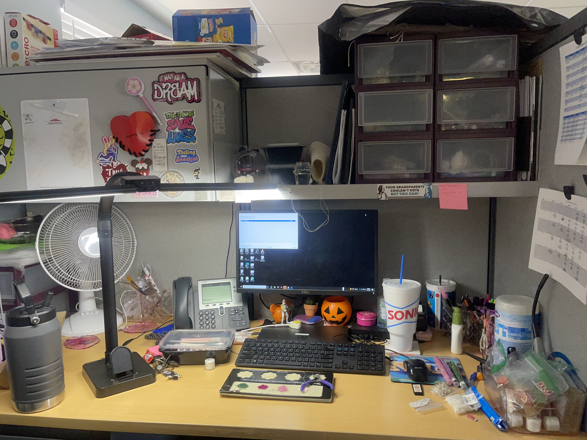

I chose this picture of the Balboa shoreline because it’s been a beach I’ve gone to since I was little. Throughout my childhood, I’d go to the beach at least once every summer. I’ve had many good times at this specific beach and I’ve had gatherings with other native/indigenous people my age here.
I tend to spend more time around the pier, but I do go to the fire pits sometimes. When I come to the beach, I come with the items I need for the beach, which often takes a small plot of land. However, when I leave, I try to leave no trace that I was there to preserve the beach.
I feel I am more connected than I have been in years, but I wish I could be a little more connected to my community. I think we could definitely occupy more spaces and it’s absolutely our right to create more spaces meant for us, especially as we progress in the modern world.
I hope that I can continue this project even after this class and potentially showcase it to more people along the way.
Participant AA
because my bed is where i’m able to be my true shelf and able to feel my feelings without being judge by others and having others ask what’s wrong and the wants on drawer has most of mine prized possessions such as flowers and photos that are sentimental to me
i use it as an outlet for my emotions to flow
yes and no i def know some stuff but i feel like there are areas where it blank and empty
Hope you get a good grade???
Participant AeA
i chose this picture because it was one of my favorite pictures that i took when i went to Sedona.
I took space in this photo by just enjoying the presence of nature and the setting that surrounded me.
I do feel connected to my community and people around me, but I feel like there are always more spaces to open yourself up to.
My hope for this project is for people to see what spaces they can open themselves up to. By becoming more in touch and exploring new spaces we learn a lot about each other and ourselves.
Participant CS
I chose to share this photo, because this is where I spend much of my time outside of school. In my home is where I feel most comfortable and free to take space. Being an accumulated physical space of my life makes this feel like the most genuine portrayal of myself and all that I am and have been. In it I have visual cues of some past hobbies (baseball bat, pickleball and table tennis, reading, etc), some family members (blankets given to me by my great-grandmother, decoration put up by my siblings and parent, etc.), and various other small details pictured. I think the state of my room and the objects that I leave out are another detail that I might not often think about, but realize when looking at them that outline my current interests, some more persistent pieces of my life, and possible direction to where things are headed.
I think allowing myself to exist to the fullest extent is how I take space; whether that includes consuming my favorite media, bringing in my favorite people, working on my gourd designs, or even just studying for school. My bedroom is something that has allowed me to fill it with various arts, crafts, sounds, colors, tools, materials, collectibles, etc; it is the gathering point of the beginnings of all my adventures and the end of them. And though it may sound cliché, it is true that I hold this space in high regard for all that has been provided to me through it.
I feel very connected with my community, especially in this space. I think positionality plays a huge role in this feeling, in the literal geographic sense and a social sense. My home, bedroom, etc. is a direct result of the family members that have worked to make them; my third-great grandmother was one of the first people to live in Pala after the Kupas were removed from Kupa (Warner Springs, CA), then my second-great grandmother worked to mobilize our community in culture, resource, and network, and then my great grandmother served on the tribal council as vice-chairwoman where she continued the work of her -mothers prior. My grandmother, from there, has expanded her home from what was a small ‘70s HUD home to a 3-generational one, the one I live in today. Separately, but similarly, is the literal geographic location of this home on the Pala Reservation. For all my life, I have lived in my community and among my family. Growing up I was surrounded by loved ones and culture-bearers all connected by a shared history. Leaving home to attend school at UCI was, and still is, shocking and I still get this same feeling about the tangible difference of the communities I take space in today, outside of my immediate own. In the most general sense, I feel that the space I occupy is enough, but that my university communities—like AISA—are not occupying enough space. This may be a fact, but I know that my idea of space is based on that Native-dominated space I co-occupy at home and in my photo. Nevertheless, I still feel that the space I hold at UCI and how I represent that space is very indicative of my community and the experiences I have/get from that place.
I think this project sounds interesting in that it is a collection of stories and represents so many different, or similar, spaces. The stories that we carry with us and the way a single photo can hold all that information to the beholder (whether shared or not) is an incredible concept. My photo may contain similar visual- subject matter, though it is likely that the details of my story are unique to me. Amalgamating these into a single visual will be great, and I am reminded of a book: Project 562 : Changing The Way We See Native America. I think that this project has the ability to display the microcosm of connections/relations that the artist has.
Participant DA
I’m here at the station/ambulance about 1/3 of the year and I love my place of work
I sit in the side chairs next to the gurney, my true work place
I feel heavily connected to my community as I have the privilege to care and treat for the Gila River Indian Community. There are more spaces that can be filled but I’m very happy to those that already fill these spaces as it takes a special mindset to have one of these seats.
To recognize that this space to occupy is very rewarding to be in and work in. That being in this space will always bring a deeper connection to the community it serves and it can always be filled by anyone who has that same perspective and ideology.
Participant AD
I chose this photo because it reminds me that I can find peace anywhere, even a bustling area. It is a very calming place that helps me clear my mind; the water, land, and wind all come together in such a perfectly balanced way.
I enjoy walking the trails and looking at the native plants. The marsh was man-made but it was created to look like Irvine’s natural environment.
I do feel connected with my community when I’m at the marsh. The natural environment of the marsh in Irvine reminds me that Natives (whether it be plants, animals, or people— like myself) belong here. It is important to acknowledge that, for a long time, my community wasn’t allowed to occupy space, so I do think there should be more spaces like this for us.
My hope is for you to have a really meaningful end piece!
Participant LA
Hmm, I chose it because recently I’ve been back home and I find myself coming back to this park and reminiscing on all the fun memories I had when I was younger
Oh, ya I take a walk around the park, I’ll sometimes have lunch or something or just go and listen to the music from across the street at the botanical garden
Hmm I think spaces are occupied but I am certainly not connected with my community because I’ve been living in AZ my whole life until now
Hmmm I hope that it serves to highlight how unique all of our experiences are with the land and community around us, especially as indigenous peoples we have unique connections to the land that varies to each tribe regardless of how popular culture shows us as one amalgamation
Participant CY
This is where we share ceremonial space at home.
Being far away from our sacred places, this space allows us to feel connected by being surrounded by an arroyo filled with Native plants (most of which I cultured and introduced over the years) and Ko (fire).
Not as connected as I can be. There are always more spaces that can be occupied as we spin off into this ever expanding universe.
I hope that you do well and that this project can bring a smile to someone who needs it.
Participant JS
Participant NA

This is my work desk that I spend about 5-8hrs a day depending on what I am doing that day. I like my little set up and I feel that it describes my interests. I have my beads always available for when I’m inspired and trying to be more organized. I also have my Stanley to help drink more water….I have my stickers that reflect a little bit of me. It’s me and all my madness/creativity as well
I’m in the corner of other cubbies so it’s easier for me not to be in the mix of things. I also wear my headphones every day so I’m able to listen to my own music. I am able to listen while I am at my desk all day. So I can get lost in my own work
Depends on the day. I feel like I do a lot of things by myself and do what I like to do but at the same time I am inspiring my coworkers to do things that I do. So they do come to me for advice/guidance on how I do things.
I hope that people enjoy the beadwork that I do. I enjoy doing it for work projects since I know not a lot of seniors are able to afford beadwork or know how to do it. So when I am able to I will teach a class or make earrings and necklaces and give them out for bingo prizes. I enjoy seeing them smile.